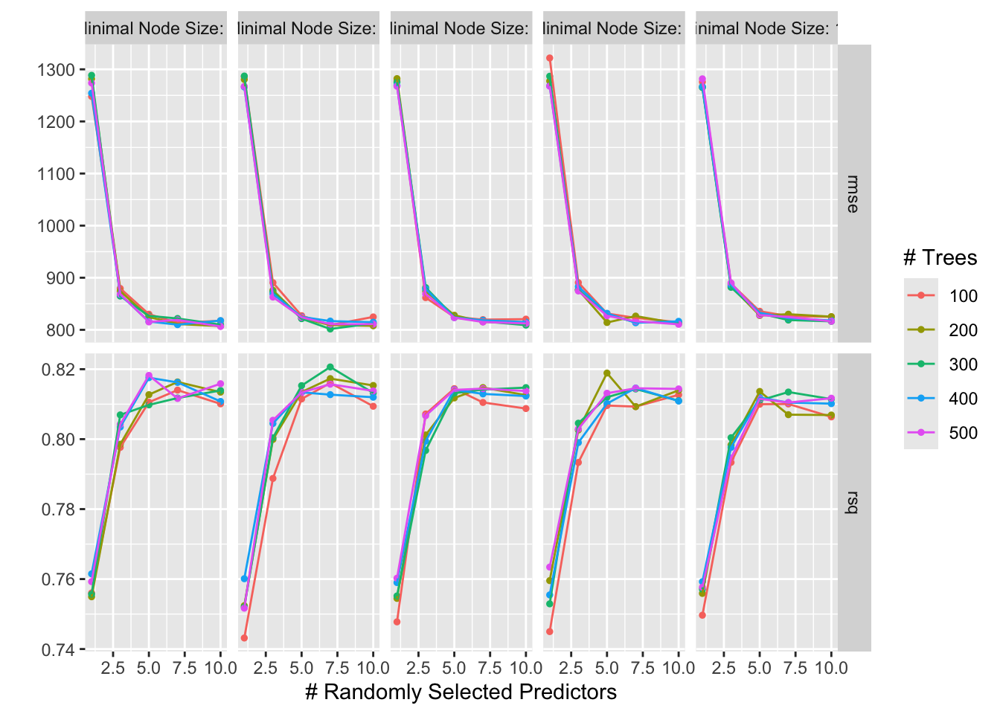

install.packages("iml")GEOG 5160 6160 Lab 05
Introduction
A frequent accusation of machine models is that they are ‘black-box’; that they are so complex, it is difficult or impossible to understand how they work. In response to this, there is a growth of interpretable or explainable machine learning methods, designed to shed some light on the inner workings of these models. These methods provide a way to understand biases in models, but can also be useful explanatory methods to help understand your dataset.
In this lab, we’ll explore the use of the methods for both global and local interpretation using a data set of bike rentals. The goal of this exercise is to predict the number of expected rentals for any given day based on a series of factors, including season, day of the week, weather, etc. (full details in appendix 1). The data are in the file bike.csv, which you should download and move to a working folder for this lab.
You will need to make sure the following packages are installed on your computer (some of these you may have already installed). Other packages for IML include shapley and DALEX
- iml: interpretable machine learning
- vip: variable importance plots
As a reminder, packages can be installed in RStudio by going to the ‘Packages’ tab and clicking on the [Install] button, or from the menu [Tools]-> [Install packages…]. You can also install these from the console window by typing
Objectives
- Understand how to convert tidymodels output for use in interpretable machine learning
- Use methods for global and local interpretation
We’ll also revisit tuning models in this lab.
It is highly recommended to use scripts or Quarto documents to store your R code - this will allow you to easily change and modify it and submit the exercise.
Next load the libraries you will need for the lab. You should at this stage have most of these already installed. Add anything that is not installed using the install.packages() function.
library(tidyverse)
library(tidymodels)Warning: package 'broom' was built under R version 4.4.1library(iml)Data processing
Let’s load the bike rental data first and take a look at the content:
bike <- read.csv("./datafiles/bike.csv")
head(bike) season yr mnth holiday weekday workingday weathersit temp
1 WINTER 2011 JAN NO HOLIDAY SAT NO WORKING DAY MISTY 8.175849
2 WINTER 2011 JAN NO HOLIDAY SUN NO WORKING DAY MISTY 9.083466
3 WINTER 2011 JAN NO HOLIDAY MON WORKING DAY GOOD 1.229108
4 WINTER 2011 JAN NO HOLIDAY TUE WORKING DAY GOOD 1.400000
5 WINTER 2011 JAN NO HOLIDAY WED WORKING DAY GOOD 2.666979
6 WINTER 2011 JAN NO HOLIDAY THU WORKING DAY GOOD 1.604356
hum windspeed count days_since_2011
1 80.5833 10.749882 985 0
2 69.6087 16.652113 801 1
3 43.7273 16.636703 1349 2
4 59.0435 10.739832 1562 3
5 43.6957 12.522300 1600 4
6 51.8261 6.000868 1606 5summary(bike) season yr mnth holiday
Length:731 Min. :2011 Length:731 Length:731
Class :character 1st Qu.:2011 Class :character Class :character
Mode :character Median :2012 Mode :character Mode :character
Mean :2012
3rd Qu.:2012
Max. :2012
weekday workingday weathersit temp
Length:731 Length:731 Length:731 Min. :-5.221
Class :character Class :character Class :character 1st Qu.: 7.843
Mode :character Mode :character Mode :character Median :15.422
Mean :15.283
3rd Qu.:22.805
Max. :32.498
hum windspeed count days_since_2011
Min. : 0.00 Min. : 1.500 Min. : 22 Min. : 0.0
1st Qu.:52.00 1st Qu.: 9.042 1st Qu.:3152 1st Qu.:182.5
Median :62.67 Median :12.125 Median :4548 Median :365.0
Mean :62.79 Mean :12.763 Mean :4504 Mean :365.0
3rd Qu.:73.02 3rd Qu.:15.625 3rd Qu.:5956 3rd Qu.:547.5
Max. :97.25 Max. :34.000 Max. :8714 Max. :730.0 library(skimr)
skim(bike)| Name | bike |
| Number of rows | 731 |
| Number of columns | 12 |
| _______________________ | |
| Column type frequency: | |
| character | 6 |
| numeric | 6 |
| ________________________ | |
| Group variables | None |
Variable type: character
| skim_variable | n_missing | complete_rate | min | max | empty | n_unique | whitespace |
|---|---|---|---|---|---|---|---|
| season | 0 | 1 | 4 | 6 | 0 | 4 | 0 |
| mnth | 0 | 1 | 3 | 3 | 0 | 12 | 0 |
| holiday | 0 | 1 | 7 | 10 | 0 | 2 | 0 |
| weekday | 0 | 1 | 3 | 3 | 0 | 7 | 0 |
| workingday | 0 | 1 | 11 | 14 | 0 | 2 | 0 |
| weathersit | 0 | 1 | 4 | 15 | 0 | 3 | 0 |
Variable type: numeric
| skim_variable | n_missing | complete_rate | mean | sd | p0 | p25 | p50 | p75 | p100 | hist |
|---|---|---|---|---|---|---|---|---|---|---|
| yr | 0 | 1 | 2011.50 | 0.50 | 2011.00 | 2011.00 | 2012.00 | 2012.00 | 2012.00 | ▇▁▁▁▇ |
| temp | 0 | 1 | 15.28 | 8.60 | -5.22 | 7.84 | 15.42 | 22.80 | 32.50 | ▂▇▇▇▅ |
| hum | 0 | 1 | 62.79 | 14.24 | 0.00 | 52.00 | 62.67 | 73.02 | 97.25 | ▁▁▆▇▂ |
| windspeed | 0 | 1 | 12.76 | 5.19 | 1.50 | 9.04 | 12.13 | 15.63 | 34.00 | ▃▇▅▁▁ |
| count | 0 | 1 | 4504.35 | 1937.21 | 22.00 | 3152.00 | 4548.00 | 5956.00 | 8714.00 | ▂▅▇▅▃ |
| days_since_2011 | 0 | 1 | 365.00 | 211.17 | 0.00 | 182.50 | 365.00 | 547.50 | 730.00 | ▇▇▇▇▇ |
Before starting, we’ll convert all categorical columns to factors and all integer columns to numeric:
bike <- bike %>%
mutate_if(is.character, as.factor) %>%
mutate_if(is.integer, as.numeric) Now let’s make a couple of figures. First, we’ll plot the rentals over time (days_since_2011)
ggplot(bike, aes(x = days_since_2011, y = count)) +
geom_line() +
theme_minimal()
There’s a fairly upward trend in the data, as the rental service became more popular over time. To avoid this, we’ll just work with the second year of data (2012). We’ll also drop the year and days_since_2011 columns. The data also contain both a season and month (mnth) feature, which are likely redundant. We’ll drop the month here.
bike <- bike |>
filter(yr == 2012) |>
dplyr::select(-days_since_2011, -yr, -mnth)A base model
Next, let’s develop a model for these data. We’ll use a random forest here. First, let’s set up and train a model without tuning. We’ll go through the usual steps to set up:
- Define a recipe to one hot encode the categorical values
- Split the data into training and testing
- Use the recipe to process these datasets
rec <- recipe(count ~ ., bike) |>
step_dummy(all_nominal_predictors())
bike_split <- initial_split(bike, prop = 0.80)
bike_train <- training(bike_split)
bike_train = prep(rec) |> bake(bike_train)
bike_test <- testing(bike_split)
bike_test = prep(rec) |> bake(bike_test)Now, we’ll build a base, untuned model, and calculate the RMSE on the test set:
rf <- rand_forest(mode = "regression")
rf_fit <- rf |>
fit(count ~ ., bike_train)
pred_test <- predict(rf_fit, bike_test) |>
bind_cols(bike_test |> dplyr::select(count))
pred_test |>
yardstick::rmse(count, .pred)# A tibble: 1 × 3
.metric .estimator .estimate
<chr> <chr> <dbl>
1 rmse standard 829.Giving an RMSE of a little over 800 (your value will likely be different).
Tuning
Now let’s tune this model to get the optimal hyperparameter set. Here are the steps to set this up:
- Define the tuning specification (the model and hyperparameters)
- Define the grid (the values of each hyperparameter to test). We’ll use a very similar grid to the previous example
- Define the cross-validation strategy for tuning
## Tuning specification
tune_spec_rf <-
rand_forest(
mtry = tune(),
trees = tune(),
min_n = tune()
) |>
set_engine("ranger") |>
set_mode("regression")
## Tuning grid
rf_grid <- grid_regular(mtry(range = c(1, 10)),
trees(range = c(100, 500)),
min_n(range = c(2, 10)),
levels = 5)
## Cross-validation
bike_folds <- vfold_cv(bike_train, v = 5)Now, we’ll run the tuning, using doParallel to run this in parallel:
doParallel::registerDoParallel()
rf_res <-
tune_grid(
tune_spec_rf,
count ~ .,
grid = rf_grid,
resamples = bike_folds,
metrics = metric_set(rmse, rsq),
control = control_grid(save_workflow = TRUE)
)
rf_res# Tuning results
# 5-fold cross-validation
# A tibble: 5 × 4
splits id .metrics .notes
<list> <chr> <list> <list>
1 <split [233/59]> Fold1 <tibble [250 × 7]> <tibble [0 × 3]>
2 <split [233/59]> Fold2 <tibble [250 × 7]> <tibble [0 × 3]>
3 <split [234/58]> Fold3 <tibble [250 × 7]> <tibble [0 × 3]>
4 <split [234/58]> Fold4 <tibble [250 × 7]> <tibble [0 × 3]>
5 <split [234/58]> Fold5 <tibble [250 × 7]> <tibble [0 × 3]>Once run, let’s explore the results
autoplot(rf_res)
The key hyperparameter here appears to be the number of variables used in each split, with higher values being preferred. To check this, let’s get the best set of hyperparameters:
best_param <- select_best(rf_res, metric = "rmse")
best_param# A tibble: 1 × 4
mtry trees min_n .config
<int> <int> <int> <chr>
1 7 300 4 Preprocessor1_Model039Interpretable machine learning
We’ll now explore our random forest. For the exploration, we’ll first build a new model using all the rental data. This is optional, and we could equally use the best fit model from the tuning step using the finalize_model function. We’ll use the full dataset here for a number of reasons:
- We need to fit the model again so that it calculates the importance scores (we omitted this above)
- We use the original categorical variables rather than the one-hot encoded values, as this will make visualizing the results easier
rf <- rand_forest(mode = "regression",
mtry = 7, trees = 300, min_n = 4) |>
set_engine("ranger", importance="permutation")
rf_fit <- rf |>
fit(count ~ ., bike)We’ll also extract the trained model for use the following sections:
rf_fit2 <- rf_fit %>%
extract_fit_engine() IML setup
R has a couple of packages for interpretable ML, including iml and DALEX. These work in a fairly similar way, which we’ll illustrate here with the iml package. Rather than using the model output direct, we need to create a Predictor object. This holds all the information we need for subsequent analysis: the model, the features (data) and the target (y):
library(iml)
X <- bike[which(names(bike) != "count")]
predictor <- Predictor$new(rf_fit2,
data = X, y = bike$count)
str(predictor)Classes 'Predictor', 'R6' <Predictor>
Public:
batch.size: 1000
class: NULL
clone: function (deep = FALSE)
data: Data, R6
initialize: function (model = NULL, data = NULL, predict.function = NULL,
model: ranger
predict: function (newdata)
prediction.colnames: NULL
prediction.function: function (newdata)
print: function ()
task: unknown
Private:
predictionChecked: FALSE Global measures
We’ll start by looking at global methods for ML interpretation. As a reminder, these are methods that evaluate the model in aggregate across the full set of observations and features.
Feature/variable importance
We’ve looked at feature importance scores in the last two labs. These are measures of how useful a variable is in predicting the target. The most common form, permutation importance, is a model-agnostic approach, that can be used with any algorithm. Here, each feature is randomly shuffled in turn, and the loss in predictive power is calculated. Bigger losses indicate that a higher level of importance. Previously, we’ve visualized these with the vip package, and we can do that again here:
library(vip)
vip(rf_fit2)This clearly shows temperature as being the most influential feature for bike rentals.
Now let’s remake this with the iml package:
imp <- FeatureImp$new(predictor, loss = "mse")
plot(imp)By default, this runs 5 different permutations for each feature to get an idea of how much the importance score varies (you’ll see this as line representing the variation around the mean importance on this plot). You can set this to higher number by setting n.repetitions.
Note that the plotting is just a ggplot2 object, so you can add themes and text:
plot(imp) +
ggtitle("Feature Importance (bike rentals)") +
theme_minimal()Partial dependence
We previously looked at partial dependency curves with the tree-based methods. These are considered to be a global interpretation method as they show the average response of the model over the range of a given feature. We can make these with the iml package using the FeatureEffect function. This takes as input:
- The
Predictorobject - The feature to be plotted
- The grid size (this is the resolution of the curve, larger values will give more detail but be slower to run)
- The type of curve (
pdpmakes partial dependence plots)
We’ll start by plotting the PDP for temperature as this was the most important feature:
pdp <- FeatureEffect$new(predictor,
feature = "temp",
grid.size = 20,
method = "pdp")And we can plot the results
plot(pdp)The response seems pretty logical. Rentals increase as temperatures increase up to a maximum around 25 celsius. Beyond this, there is a slight decline at hotter temperatures. Let’s look at the response to humidity. Note that we do not need to remake the FeatureEffect object, but just supply the name of another feature:
pdp$set.feature("hum")
pdp$plot()Here we can see that humidity values below about 60% have little impact on the rentals, but there is a fairly sharp drop off above this value. We can look at the combined effect of temperature and humidity with the same object, which clearly shows the sweet spot for bike rentals when temperatures are around 25 degrees and humidity around 55% (and the low rentals at low temp/high humidity)
pdp$set.feature(c("temp", "hum"))
plot(pdp) +
scale_fill_viridis_c(option = "magma")Scale for fill is already present.
Adding another scale for fill, which will replace the existing scale.We can also plot the response for categorical variables. For example to show the difference between seasons:
pdp$set.feature("season")
pdp$plot()A second function (FeatureEffects) allows you to plot the response of all features. It’s worth keeping the grid size low here, at least while testing this method
effs <- FeatureEffects$new(predictor, grid.size = 10)
plot(effs)This function also allows the calculation of accumulated local effect plots. These show the difference in predictions as a results of changing a feature. This has the advantage of limiting bias from correlations between features, and may be a clearer way to visualize impact (i.e. positive or negative):
ale <- FeatureEffect$new(predictor,
feature = "temp",
grid.size = 20,
method = "ale")
ale$plot()Feature interaction
We can also measure feature interaction. For any given feature, this shows how much of the response is due to interactions or modifications by other features. We can calculate the total interaction with Interaction:
interact <- Interaction$new(predictor, grid.size = 15)Warning: package 'patchwork' was built under R version 4.4.1
Attaching package: 'patchwork'The following object is masked from 'package:MASS':
areaplot(interact)For the bike data, approximately 35% of the temperature drive variation in rental numbers is due to interactions with other features We can break this down further by looking at the two-way interactions - this gives the proportion of the temperature response that is modified by each of the other features. This uses the same function, but we specify the name of the feature we want to test (humidity):
interact <- Interaction$new(predictor,
feature = "hum",
grid.size = 15)
plot(interact)This shows a strong interaction between windspeed and humidity. We can then visualize this using a 2D PD plot (not too surprisingly, rentals are lower on humid days with low wind speed)
pdp$set.feature(c("hum", "windspeed"))
plot(pdp) +
scale_fill_viridis_c(option = "magma")Scale for fill is already present.
Adding another scale for fill, which will replace the existing scale.R has an additional package called vivid that allows you to integrate both the importance and interactions in a single figure. Let’s load this and make a vivi object:
library(vivid)Registered S3 method overwritten by 'seriation':
method from
reorder.hclust gclusRegistered S3 method overwritten by 'GGally':
method from
+.gg ggplot2Registered S3 methods overwritten by 'ggalt':
method from
grid.draw.absoluteGrob ggplot2
grobHeight.absoluteGrob ggplot2
grobWidth.absoluteGrob ggplot2
grobX.absoluteGrob ggplot2
grobY.absoluteGrob ggplot2bike_vivi = vivi(rf_fit2, data = bike, response = "count")Agnostic variable importance method used.Calculating interactions...And we can now visualize this as
- A heatmap (the diagonal values show the importance (green) and the off-diagonal values show the interaction (purple))
- A network (the nodes show the importance (green) and the links show the interaction (purple))
viviHeatmap(bike_vivi)viviNetwork(bike_vivi)Local measures
We’ll now look at methods for local interpretation. These methods explore how the model predicts for an individual observation. For the bike data, an individual observation is a single day of bike rentals, so these methods help shed some light on the factors driving rental numbers for any given day:
Individual conditional expectancy (ICE) plots
We’ll start with ICE plots. These are similar to partial dependency plots, as they show the changing response to a given feature. The difference is that these show this response for each individual observation. These use the same function as before (FeatureEffect), but we set the method to ice:
ice <- FeatureEffect$new(predictor,
feature = "hum",
grid.size = 20,
method = "ice")
ice$plot()Note that the partial dependency is simply the average of these individual curves, and we can add this by changing the method again:
ice <- FeatureEffect$new(predictor,
feature = "hum",
grid.size = 20,
method = "pdp+ice")
ice$plot()You should now see that some curves show a much stronger drop in rentals at higher humidity - this is likely due to the interactions with temperature and wind speed noted above. The ICE plots can also be centered to a particular value. This now shows the increase or decrease uin rentals for each observation relative to a set value of humidity. We’ll set this here to 65% (roughly where the decline starts):
ice <- FeatureEffect$new(predictor,
feature = "hum",
grid.size = 20,
center.at = 65,
method = "pdp+ice")
ice$plot()This should now emphasize the variation in rentals at high humidity, with some days exhibiting very low changes.
Shapely values
We can go a little further in examining individual observations with Shapley values. These show, for an individual, the impact of each feature. So for an individual day’s rentals, this would show the impact of that day’s temperature, humidity, season, etc. This can be particularly useful in establishing which factors led to particularly positive (or negative) outcomes.
Let’s start by finding the day with the lowest and the day with the highest rentals:
day_lo <- which.min(bike$count)
day_hi <- which.max(bike$count)
print(paste("Lowest :", day_lo, bike$count[day_lo]))[1] "Lowest : 303 22"print(paste("Highest:", day_hi, bike$count[day_hi]))[1] "Highest: 259 8714"Now, let’s look at the factors impacting the lowest rentals:
shapley <- Shapley$new(predictor, x.interest = X[day_lo, ],
sample.size = 50)
plot(shapley) +
ggtitle("Shapley values (lowest rentals)")The combination of high humidity, high wind and rain or snow appears to be the key limiting factors. Note that temperature, despite being overall the most important factor (see above) has relatively little effect on this day.
And now let’s look at the value for the day with the highest rentals:
shapley <- Shapley$new(predictor, x.interest = X[day_hi, ],
sample.size = 50)
plot(shapley) +
ggtitle("Shapley values (highest rentals)")For this day, the combination of season and warm temperatures appears to be the biggest drivers.
LIME plots
As a last approach, we’ll calculate a local model using Local Interpretable Model-agnostic Explanations or LIME plots. The idea behind this method is that the ‘local’ or small-scale relationships between features and the target can be approximated with simple, linear models. To put this in terms of this dataset, if we take a given day in June, the changes in rentals for small variations in (say) temperature should be linear. Based on this, the method simulates a small amount of artificial data around the observation (i.e. minor variations in temperature, humidity, etc), and then fits a simple model. This simple model is usually built in a way that allows it to select only the factors that are meaningful for that observation. Let’s fit this now with a single day (day 100):
lime.explain <- LocalModel$new(predictor, x.interest = X[100, ])Loading required package: glmnetLoaded glmnet 4.1-8lime.explain$results beta x.recoded effect x.original feature
weathersit=GOOD 251.369017 1.00000 251.36902 GOOD weathersit=GOOD
temp 116.577421 14.99085 1747.59451 14.990849 temp
windspeed -1.193761 23.99913 -28.64923 23.999132 windspeed
feature.value
weathersit=GOOD weathersit=GOOD
temp temp=14.990849
windspeed windspeed=23.999132plot(lime.explain)On this day, the warm weather increased rentals, and the high wind speeds decreased them slightly.
Exercise
In the cancer dataset, there are two possible predictor variables that we did not use above (poverty rates Poverty and smoking rates Smoking). For the exercise, you will need run a new analysis that includes these. There are three options given below; students in GEOG 5160 will need to do one of these, students in GEOG 6160 will need to do two.
- Use the cancer dataset to carry out a non-spatial and spatial cross-validation, following the example above. This will be a regression task, and you should include all the possible predictors (poverty, smoking and air pollutants). You can use a random forest, or any of the other algorithms we have looked at so far. Report the RMSE and \(R^2\) for both cross-validation methods, and write a short statement that explains in simple terms what these mean (1-2 sentences)
- Make a new geographical random forest model that includes the variables mentioned above. Your answer should include a) a variable importance plot based on the global model; b) maps of the importance scores for all variables and the local \(R^2\); c) a short description (2-4 sentences) of the spatial patterns you observe
- Make a new model with spatial basis functions that includes the variables mentioned above. You should try at least two different basis functions setups (I’d recommend that at least one uses the irregular basis functions described in the section above). Your answer should include a) a figure showing the distribution of the basis functions you used; b) cross-validated RMSE and \(R^2\) values; c) a short statement as to whether the basis functions have improved the model (1-2 sentences)
Use a Quarto document to record your answers and output. Assignments, to include both the Quarto document and (ideally) the compiled HTML file, should be submitted to Canvas by Feb 19th. Please use the following naming convention: Lab04_lastname.
Appendix 1: Bike rental dataset
Bike rental dataset from https://christophm.github.io/interpretable-ml-book/bike-data.html:
season: The season, either spring, summer, fall or winter.year: The year, either 2011 or 2012.mnth: The monthholiday: Indicator whether the day was a holiday or not.weekday: Day of weekworkingday: Indicator whether the day was a working day or weekend.weathersit: The weather situation on that day. One of:- clear, few clouds, partly cloudy, cloudy
- mist + clouds, mist + broken clouds, mist + few clouds, mist, light snow, light rain + thunderstorm + scattered clouds, light rain + scattered clouds
- heavy rain + ice pallets + thunderstorm + mist, snow + mist
temp: Temperature in degrees Celsius.hum: Relative humidity in percent (0 to 100).windspeed: Wind speed in km per hour.count: Count of bicycles including both casual and registered users. The count is used as the target in the regression task.days_since_2011: Number of days since the 01.01.2011 (the first day in the dataset). This feature was introduced to take account of the trend over time.